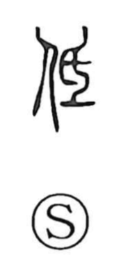

低

Uncategorized
Kun: hikui, hikumeru, hikumaru | On: tei
low ・ to lower ・ short
Explanation
A phono-semantic character. Its phonetic core is 氐 (tei), a form built from 氏 and 一 that shows the bottom being pared flat with a small handled knife, thereby made low and level. With the person element added, the graph speaks of a person’s short stature and of bringing one’s standing down. In time it broadened to the general senses “low” and “to lower.”